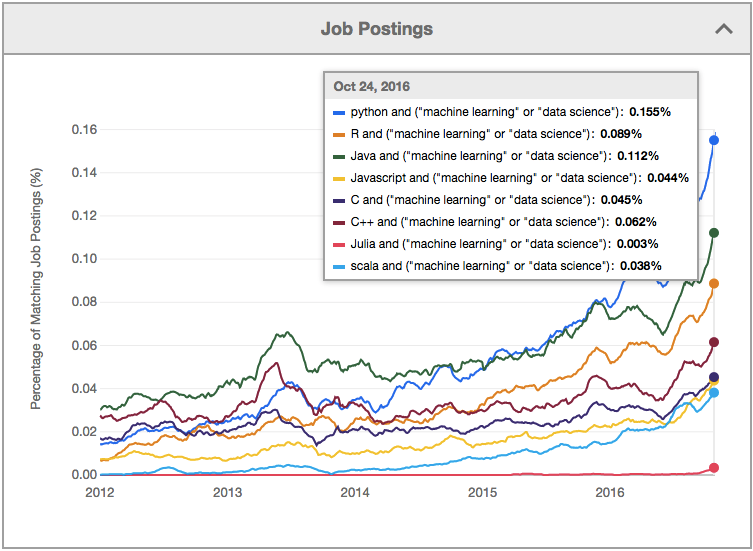

1. Introduction¶
1.1. About the course¶
Students who complete this seminar successfully will be aware of the practical implementation and usage of machine learning algorithms. Furthermore, they will be able to apply machine learning algorithms in real problems using efficient programming languages, for example Python.
1.1.1. Requirements to pass the course¶
50% implementation of weekly excercises
Report of personal task exceed the passing criteria
The problem of the task is clearly presented
The data used for solving the problem is clearly documented
The data preprosessing and feature calculation is clearly justified, explained and implemented. Excellent report cites research litterature to justify the case.
Appropriate machine learning algorithms are chosen, the choice is rationally justified indicating knowledge of various machine learning methods, and the implementation is cleanly coded and explained using comments in the code. Again excellent report cites research litterature in this phase.
The results are reported using high quality graphics and University’s document template. The graphs in the excellent report are of publication quality and they are correctly referenced in the text.
Acting as an opponent of at least one report.
1.2. Machine learning and Artificial intelligence¶
What do you seen in the following video? Machine Learning? Artificial Intelligence? Automation? Atlas robot
Is the robot intelligent?
Does it have feelings?
Is it Ok to bully a robot?
Are human rights going to be applicable for future robots?
1.3. Artificial intelligence (AI)¶
Intelligence demonstrated by machines.
Some interpretation is that the AI is the methods which are not just yet taken into use. Therefore they may a machine look like an intelligent being, when you don’t understand how it works.
An argument supporting this theory is that in 70’s AI was exper systems, which are nowadays called as logics. Systems using artificial neural networks are more often described as just ANN or machine learning nowadays.
When/if we someday fully inderstand human brain, do we still call it intelligent or just an automaton.
Humanized AI shows characteristics of all types of competencies (i.e., cognitive, emotional, and social intelligence), is able to be self-conscious and is self-aware in interactions.
1.4. Machine Learning (ML)¶
Machine learning is a subset of artificial intelligence in the field of computer science that often uses statistical techniques to give computers the ability to “learn” with data, without being explicitly programmed. Wikipedia
Human can learn by copying what the other humans do (learning from data) or they can directly learn the rules (e.g. learning math). Machine learning happens when a machine (e.g. computers) learns from data. Using the rules directly is programming.
1.4.1. Data from IoT networks¶
The decreasing size, cost and power consumption of micro-controllers have made it possible to make previously simple objects digital and smarter. For example room temperature thermostats, cameras, power and distribution grid components are nowadays usually digital. Simultaneously the coverage of wireless networks are ready to reach these ubiquitous sensors, creating so called Internet of Things (IoT) with them. The connectivity and reduced costs in storage technologies in turn have made it possible to store the data collected by the sensors distributed in the IoT networks.
1.4.2. Big data sources¶
The increasing amounts of data is more and more often also openly published in the Internet. Easy access to large data sets has attracted researchers and businesses to apply data driven research methods to various data sources and to collect even more data in pursuing to extract value from large data sets. Success in these efforts in turn raises interests in collecting even more data.
1.4.3. Sports¶

Jyväskylä Kirittäret won the Finnish championship of baseball. They say that they had collected more data than they competitors about previous games. It is nowadays common in sports that the own and competing teams are hevily analyzed. Data analytics and machine learning is even more heavily used in international sports events.
1.4.4. Politics¶
Statistics and ML plays a significant role also in the USA precidential elections. The opinions of the people in different states are known, and speeches written based on statistics. Cambridge Analytica had a significant role in the previous elections already. Data mining based political consulting was their main business. Their interference to elections was recarded as scandalous by some, and they regard CA as controversial company. Some governmental organizations, Internet Reserch Agency, do utilize similar methods trying to affect to other nations. Perhaps these methods are staying for good, but it is really important for a citizen to understand it.
1.4.6. How to turn data to information¶
If you know the data, and know the rules, you can make a program to make decisions based on data.
If you have data and you know the answers, you can let the computer to learn the rules
If you have the data, but don’t know anything, you can explore the data with unsupervised method

1.4.7. Before Machine Learning actually begins¶
According to the CrowdFlower Data Science report, data scientists spend the majority of their time cleansing data — and surprisingly this is also their least favorite part of their job. Artificial Intelligence vs. Machine Learning vs. Deep Learning
1.5. Python¶
print("Why python?")
Why python?
It is free and open source and it runs everywhere (in your phone, Raspberry-Pi, Cray, …)
It is easy to learn (interactive, quite well known syntax, mimics MATLAB
It has really good libraries for ML
Pandas for statistics, time series data processing and very convenient access to data
Scipy for engineering functions, optimisation, intrpolation, …
NumPy for efficient numerial calculations, linear algebra, …
Scikit-Learn for Machine learning
Matplotlib for plotting graphics
Seaborn another plotting library
Keras for deep learning, using GPU
Python is also very versatile and can be used for many other purposes as well, and not only for ML
Typical tools for programming
Spyder MATLAB-like programming and analysis interface for Python
Jupyter notebooks and jupyterlab are web based programming environments, which support also dozens of other languages
Geany, Atom, Notepad++ VS-Code, Sublimetex, Emacs, VIM, or any other editor can be used of course
Sometimes it is convenient to work just by using interactive IPython console
1.5.1. Python in currently really popular in ML¶

According to GitHUB the order is 1) Python, 2) C++, 3) JavaScript, 4) Java
Julia is rising Fast
R has been very popular, but may be decreasing
1.5.2. Running Python without installation¶
Run it in the Jupyter Notebooks
from CSC notebook server. This is the recommended method. All libraries, notebooks and data is copied from the github repository of the course to be available for making exercises. CSC server takes about 30 seconds to start and performs pretty good. Maximum lifetime is 8 hours.
from Binder. This method also copies all maetrials and notebooks from github repository. Takes probably longer to start than CSC version and has shorter lifetime, but performs better than CSC version.
Run it in Repl.it. This can be used for fast interactive programming session, but is does not support notebooks. You can configure it to copy the materials from GitHub as well.
Run python notebooks in Google Co-Lab. It does not automatically sync with GitHub, but you can copy the data in your Google drive.
1.5.3. Installing Python¶
In Linux, it is easy to install python. In ubuntu or debian just say
apt install python3 ipython3 python3-numpy python3-scipy python-scikits-learnapt install spyder3 python3-seabornapt install jupyter
In Windows or MAC it is easiest to install Python using Anaconda distribution. See installation instructions from their web page.
Anaconda already installs most of the needed packages, and you can easily install more using the package manager provided by the Anaconda
Anaconda can also be installed and used in Linux
1.5.4. Note¶
Today is best to install Python3.
You need functional Jupyter environment and Python3 kernel to make the excercises of this course.
Anaconda and Python is already installed in the classroom TF4110
1.6. Testing Python¶
Open Jupyter notebook or IPython console and try to test some programming
# Lines starting with a Hash character, are comments, and they are not executed
# Note that this example is written in Jupyter Notebook, running Ipython-kernel.
# The Hello World application in Python is really simple, you just call a print()-
# function, giving the string to be printed as a parameter. String literals are
# made using single or double quotes
print("Hello World!")
print('Hello Again')
Hello World!
Hello Again
# Print statement can also include C-like formatting strings to print numbers
# For loops are used to iterate over lists or other iterable objects.
for i in range(3):
print("Round %d" % (i))
Round 0
Round 1
Round 2
# Functions are defined using a def-keyword
def sumNumbers(n):
"""
Very naive implementation of a function, which calculates
the sum of first n numbers.
Example:
x = sumNumbers(5)
"""
s=0
for i in range(1,n+1):
s+=i
return s
# Test it now
print("Sum of numbers from 1..5 is %d\n" % (sumNumbers(5)))
# Help is build in
help(sumNumbers)
Sum of numbers from 1..5 is 15
Help on function sumNumbers in module __main__:
sumNumbers(n)
Very naive implementation of a function, which calculates
the sum of first n numbers.
Example:
x = sumNumbers(5)
Note that in Python, the indexing starts from zero.
In many programming languages, blocks of code are indicated using braces {…}. Python uses colon for indicating the start of the block and the lines belonging in the block are separated by indendation.
Good resource for learning Python programming is free Dive into Python book.
## Using libraries
# Import numpy, which includes similar functions than MATLAB
import numpy as np
# Import plotting library
import matplotlib.pylab as plt
# Lets generate linear range from 0 to 1 with 500 values and use that as a time axis
# Use help(np.linspace) to see details how the function works
t=np.linspace(0,1,512)
# Then we create a sinusoidal function using the given time axis and freqency f in Hz
f=3 # Hz
x=np.sin(2*np.pi*f*t)
# Then we plot the calculated sinusoid against the time axis, activate grid and
# give names for X and Y axis
plt.plot(t,x)
plt.grid()
plt.xlabel('Time / s')
plt.ylabel('Amplitude')
Text(0, 0.5, 'Amplitude')
1.7. Excercises¶
Download Notebook 1, make the excercises and submit your finished notebook to Moodle within one week.
If facing problems, submit questions in Moodle discussion area for current week. You can also try general chat group for Moodle.
If the problem is not solved, we can try to solve it in the next lecture
1.4.5. Social media¶
The participants of this course may find a document Valvontakapitalismin vaarat / Social Dilemma as interesting. It describes the social media as a system, where AI and ML is analyzing the users, and the algorithms try to keep them addicted. According to he movie, the users are the product which are sold to advertisers and opinion leaders. The social media is said to build discussion bubbles which form a tailor made view to the reality for each user, thus polarizing the views. Social media provides excellent possibilities to analyze the behaviour and opinions of the individuals in almost real time and act upon.